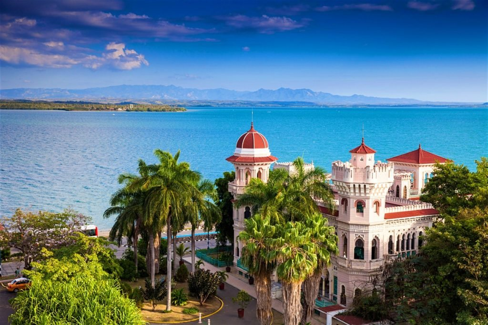

The Most top five Best Places In The Cuba
Havana Old Town

Location: Havana.
Best Time to Visit: December-May.
Info: A UNESCO site known for colorful colonial buildings, vintage cars, and lively culture.
Varadero Beach

Location: Varadero.
Best Time to Visit: December-April.
Info: A stunning beach destination offering soft white sand, turquoise waters, and luxury resorts
Vinales-Valley
Location: Pinar del Río Province.
Best Time to Visit: November-April.
Info: A picturesque valley known for tobacco farms, limestone hills, and rural charm.
Cienfuegos

Location: Southern Coast.
Best Time to Visit: December-May.
Info: Known as the “Pearl of the South,” it boasts French-inspired architecture and a coastal vibe.
Trinidad Town
Location: Central Cuba.
Best Time to Visit: December-May.
Info: A beautifully preserved colonial town with cobblestone streets and vibrant markets.